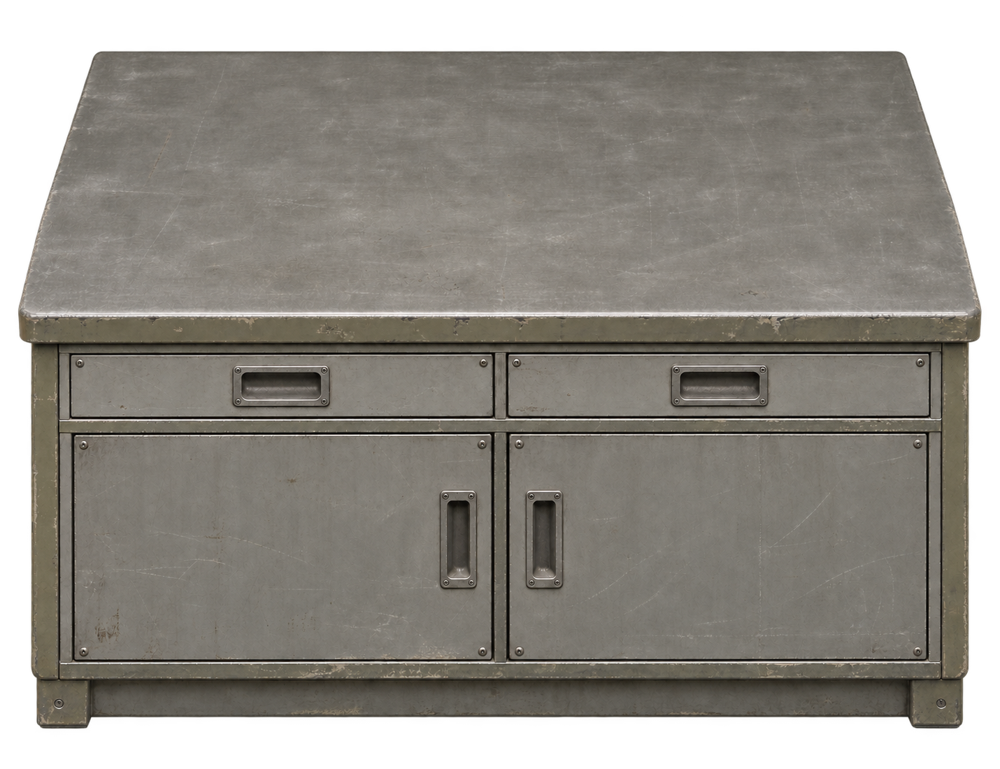
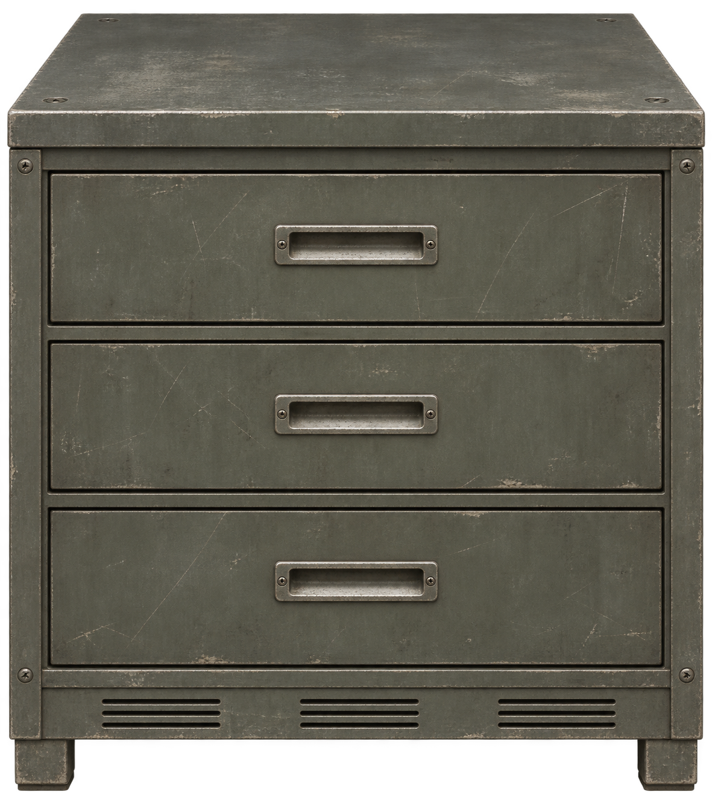
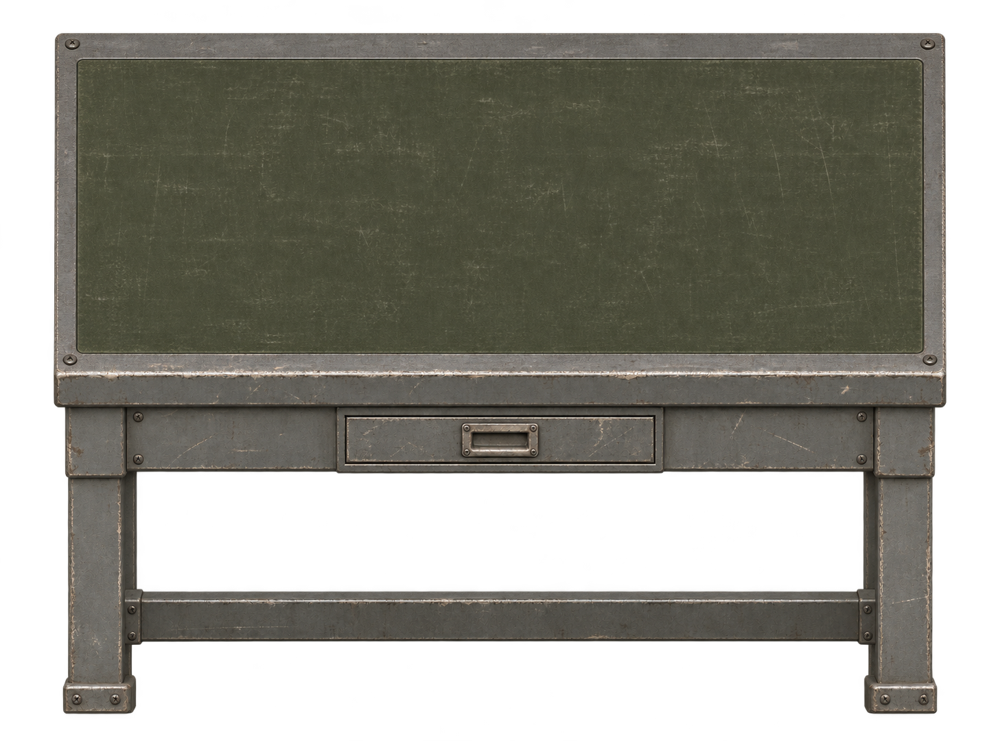
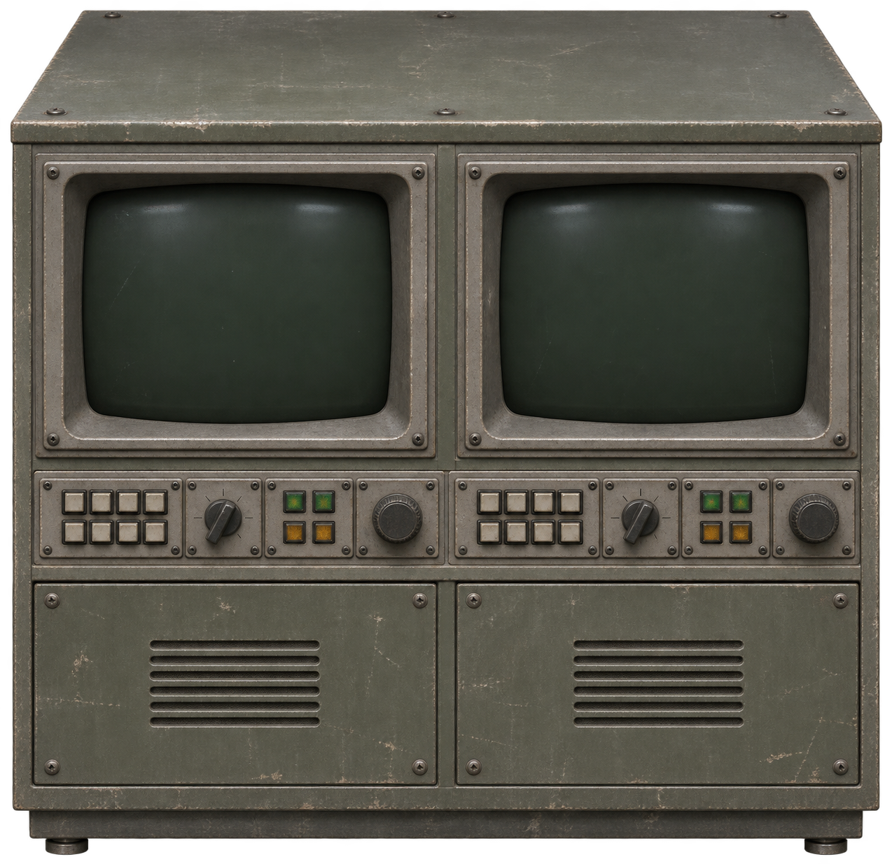
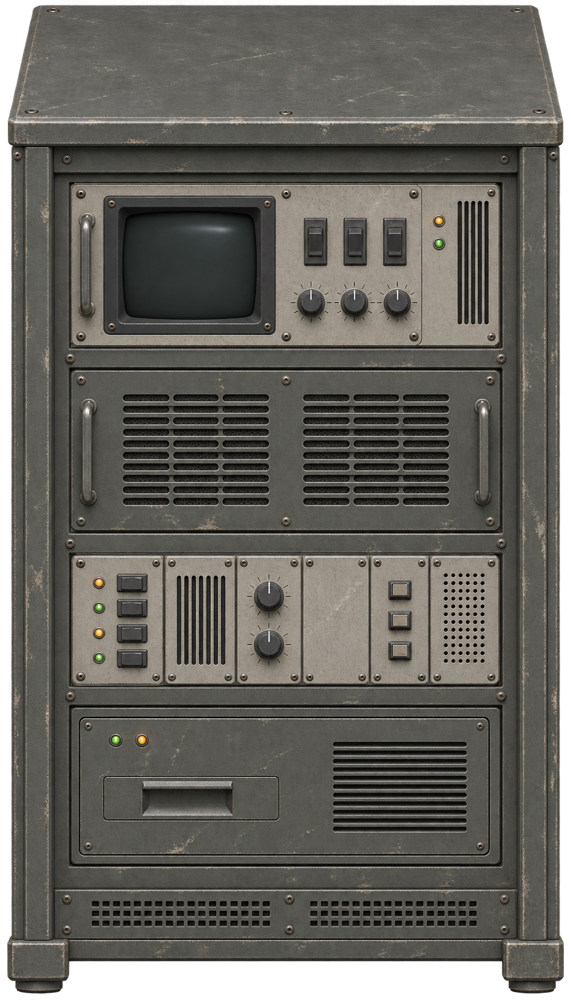

NOUVEAU PNG · V120
Réserve — comptoir médical
reserve-medical-counter
v109-reserve / medical-counter
- Fichier natif
- 1430 × 1100 px
- Boîte alpha ≥128
- [26, 73, 1403, 1042]
- Pivot
- [714.5, 1042]
- Poids
- 2 189 660 octets
ALIENS (1986) · PRÉSENTATION V120
Plateaux vides pour les terminaux existants, armoire partagée entre réserve et atelier, et réemploi du rack V119 à Hadley. Le catalogue compte 151 images distinctes.

NOUVEAU PNG · V120
reserve-medical-counter
v109-reserve / medical-counter

NOUVEAU PNG · V120
utility-storage-cabinet
v109-reserve / reserve-cabinet · v112-workshop / optics-cabinet

NOUVEAU PNG · V120
optics-workbench
v112-workshop / optics-bench

NOUVEAU PNG · V120
operations-display-bank
v107-operations / ops-display

RÉEMPLOI · V119
operations-storage-rack
v106-hadley / service-rack
Le fichier de V119 reste unique. Cette nouvelle affectation ne crée pas une 152e image.
Ouvrir le PNG V119